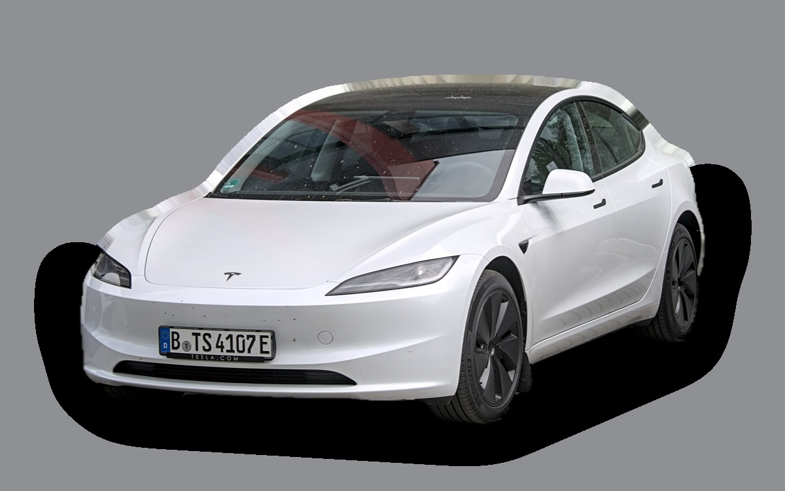
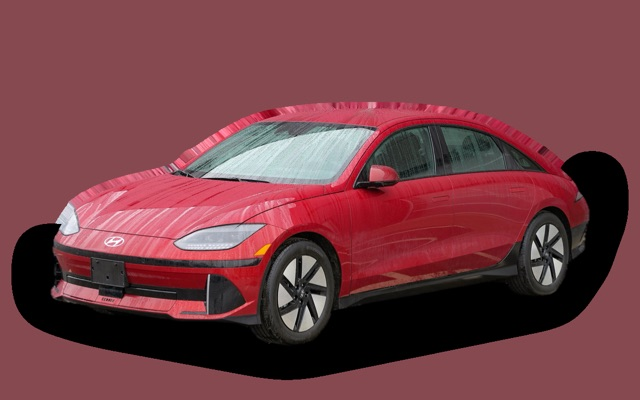
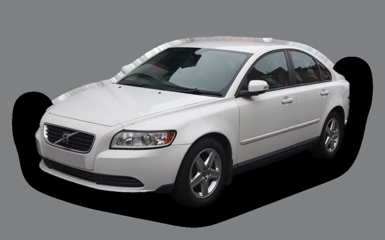
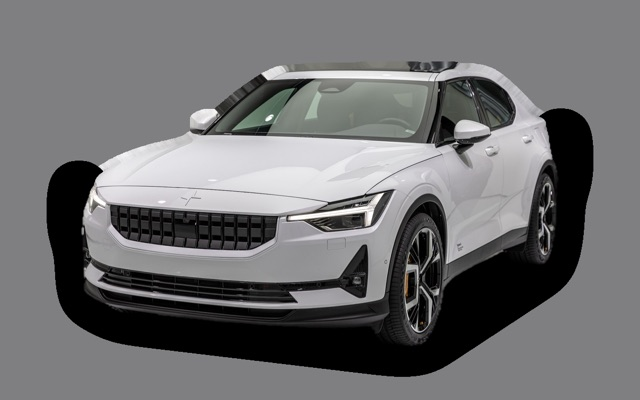
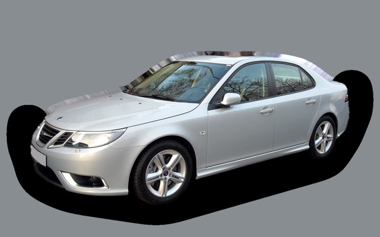
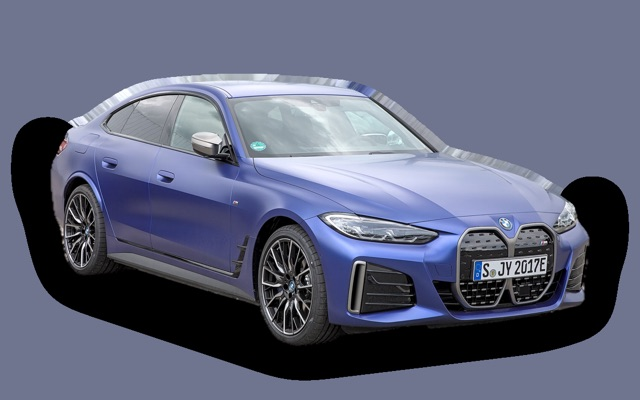
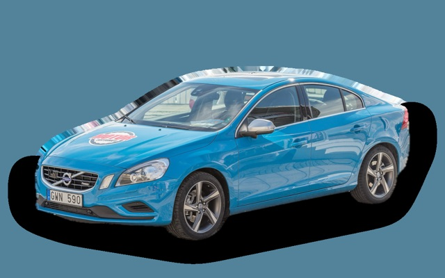

Vad kostar en Tesla Model 3 per månad?
En Tesla Model 3 från 2023 kostar cirka 3 322 kr i månaden, allt inräknat.

_IMG_9488_(cropped).jpg){kind=link}
Månadskostnad per årsmodell
| Årsmodell | Version i beräkningen | Pris | Per månad | Betyg |
|---|---|---|---|---|
| 2026 | RWD, 18 tum | 449 900 kr | 4 812 kr | B |
| 2023 | RWD, 18 tum | 298 000 kr | 3 322 kr | A |
| 2020 | RWD, 18 tum | 207 000 kr | 2 656 kr | A |
Räknat på 5 års ägande och 1 250 mil per år, med bränslepriser från 2026-10-22. Månadskostnaden innehåller värdeminskning, drivmedel, service och reparationer, försäkring och fordonsskatt.
Så fördelas kostnaden för en 2023:a
- Värdeminskning: 2 073 kr/mån
- Drivmedel: 341 kr/mån
- Service och reparationer: 314 kr/mån
- Försäkring: 565 kr/mån
- Fordonsskatt: 30 kr/mån
Leasa eller köpa ny?
Tesla Privatleasing erbjuder Model 3 bakhjulsdrift från 4 795 kr i månaden i 36 månader och 1 000 mil per år. Så mycket kostar det jämfört med att köpa samma bil ny för 449 900 kr och sälja den efter 36 månader, räknat på 1 250 mil per år och 5 procents ränta.
Ungefär lika Skillnaden är under 100 kr i månaden.
| Per månad | Leasa | Köpa |
|---|---|---|
| Leasingavgift, 1 250 mil per år | 4 910 kr | – |
| Avgifter och förhöjd första hyra | 914 kr | – |
| Värdeminskning | – | 4 293 kr |
| Ränta på pengarna, 5 % | – | 1 553 kr |
| Service och reparationer | 180 kr | 180 kr |
| Drivmedel | 334 kr | 334 kr |
| Försäkring | 717 kr | 717 kr |
| Fordonsskatt | 30 kr | 30 kr |
| Totalt per månad | 7 087 kr | 7 108 kr |
| Totalt på 36 månader | 255 132 kr | 255 888 kr |
Du kör 250 mil mer per år än erbjudandet räknar med. Märkets pris för fler mil: 116 kr i månaden. Tesla Privatleasing: Model 3 bakhjulsdrift, 36 månader, 1 000 mil per år, 30 000 kr i förhöjd första hyra, service ingår inte, fast avgift. Uppläggningsavgift 795 kr och aviavgift 59 kr i månaden (uppskattat, beloppen står inte i erbjudandet). Källa: tesla.com, avläst 26 oktober 2026, gäller till och med 31 mars 2027.
Köpa: 449 900 kr för en ny bil i samma version, och 295 350 kr tillbaka när du säljer den efter 3 år. Restvärdet bygger på annonspriserna för 3 år gamla bilar, justerat för att du kör 3 750 mil på 3 år i stället för typiska 6 200 mil. Räntan är vad pengarna kostar: ränta på ett billån, eller räntan du går miste om på sparade pengar. Drivmedel, försäkring och skatt är desamma. Övermil och onormalt slitage betalas när leasingbilen lämnas tillbaka, och byter du in en köpt bil hos en handlare får du oftast mindre än annonspriset.
Räkna med din egen körsträcka och ränta · Alla leasingbilar jämförda
Begagnatpriser i annonser
| Årsmodell | Medianpris | Annonser | Typiskt miltal |
|---|---|---|---|
| 2025 | 469 500 kr | 7 | 2 700 mil |
| 2024 | 428 400 kr | 24 | 4 700 mil |
| 2023 | 334 000 kr | 16 | 7 600 mil |
| 2022 | 325 000 kr | 13 | 8 200 mil |
| 2021 | 294 900 kr | 30 | 9 800 mil |
| 2020 | 244 800 kr | 26 | 12 000 mil |
| 2019 | 232 400 kr | 28 | 12 600 mil |
Medianpriset i svenska annonser per årsmodell i oktober 2026 (källa: Blocket, AutoUncle). Annonspriser är utgångspriser, och slutpriset kan bli lägre.
Motorer och versioner
| Motor | Drivmedel | Effekt | 0–100 km/h | Förbrukning (WLTP) | Räckvidd | Årsmodeller | Pristillägg |
|---|---|---|---|---|---|---|---|
| RWD | El | 283 hk | 6,1 s | 13,2 kWh/100 km | 554 km | från 2019 | – |
| Long Range AWD | El | 498 hk | 4,4 s | 14 kWh/100 km | 629 km | från 2019 | +134 800 kr |
| Performance | El | 625 hk | 3,1 s | 15,5 kWh/100 km | 528 km | från 2019 | +211 000 kr |
- Fälgar: 18 tum, 19 tum (+17 000 kr)
Fakta
- Kaross
- Sedan
- Årsmodeller
- sedan 2019
- Nypris från
- 449 900 kr
- Bagage
- 594 liter
- Euro NCAP
- 5 av 5 stjärnor
- Nybilsgaranti
- 4 år
- Driftsäkerhet
- 2,5 av 5
- Helförsäkring, uppskattning
- 9 300 kr/år
- Service, uppskattning
- 2 100 kr/år
Vanliga fel att ha koll på
- Främre övre länkarmar, reparation cirka 5 000 kr
- Bromsok kärvar av vägsalt, reparation cirka 5 000 kr
Felen gäller vissa motorer och årsmodeller. I kalkylatorn räknas risken för just den version du väljer.
Fördelar och nackdelar
Fördel
Lägst energiförbrukning i urvalet och snabb.
Nackdel
Dyr att försäkra och reparera.
Liknande bilar

Hyundai Ioniq 63 479 kr/mån som 2023:a
Volvo S403 162 kr/mån som 2009:a
Polestar 23 144 kr/mån som 2023:a
Saab 9-3 Sport Sedan3 563 kr/mån som 2008:a
BMW i43 613 kr/mån som 2023:a
Volvo S60 II3 695 kr/mån som 2015:a
Uppdaterad 2026-10-27 · annonsdata okt 2026